中文
中文扩展：自定义 APP
自定义 APP
自定义 APP 简介
自定义 APP 是运行在 NanoKVM Go 触摸屏上的全屏 Python 应用。它通过设备提供的 appbase SDK 在 RGB565 framebuffer 上绘制界面、读取触摸事件，可以把 NanoKVM Go 的屏幕扩展成状态面板、计时器、行情看板或其他交互工具。
NanoKVM Go 提供了完整的 APP 管理和运行流程：
App Server 或本地 ZIP → 网页安装和管理 → 设备 Apps 页面启动
普通用户可以直接安装和使用现成 APP；开发者也可以编写自己的 Python APP，打包为 ZIP 后上传到设备。本文先介绍如何安装和使用 APP，再以 Hello World 为例说明开发和部署流程。
使用前准备
开始操作前，请确认：
- NanoKVM Go 的系统和应用已更新至最新版本；
- 可以在局域网内正常访问 NanoKVM Go 网页；
- 设备触摸屏可以正常操作，并且主界面中有
Apps页面； - 从 App Server 安装 APP 时，NanoKVM Go 可以访问对应的应用仓库；
- 开发自定义 APP 时，电脑上已准备文本编辑器、Python 基础环境和 ZIP 打包工具。
如果网页设置中没有
Apps选项，或设备端没有Apps页面，请先检查并更新 NanoKVM Go 的系统和应用版本。
安装和使用 APP
运行内置 APP
在设备触摸屏上进入 Apps 页面，选择一个内置 APP 即可启动。可以先通过这些示例了解 APP 的全屏显示、动画和触摸交互效果：
| APP 目录 | 页面名称 | 主要功能 |
|---|---|---|
conways-game-of-life |
Conway | 运行限帧动画 |
crypto-candlestick |
Crypto | 显示行情数据并支持滑动翻页 |
nyan-cat |
Nyan Cat | 显示像素精灵动画 |
pomodoro-timer |
Pomodoro | 提供按钮、点击和倒计时功能 |
Crypto 使用公开行情接口；网络不可用时会回退到模拟数据，仅用于展示网络 APP 的实现方式。
从 App Store 安装 APP
App Server 是供 NanoKVM Go 浏览和下载 APP 的应用仓库。网页 设置 > 应用 中包含两个区域：
已安装（Installed）：管理已安装的 APP，可以编辑配置、下载或移除 APP；应用商店（Store）：浏览官方仓库或用户添加的仓库，并直接安装 APP。
无论使用官方仓库还是其他 App Server，都需要先打开 NanoKVM Go 网页，点击顶部工具栏中的设置图标进入 设置。
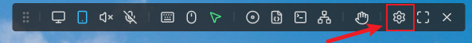
选择 App Server
Sipeed 官方仓库 NanoKVM-Go-Apps 已预置在设备中，使用官方仓库时不需要额外配置 App Server。
如果需要使用其他 APP 仓库，请先进入 设置 > 应用，点击 应用商店 > 应用源。
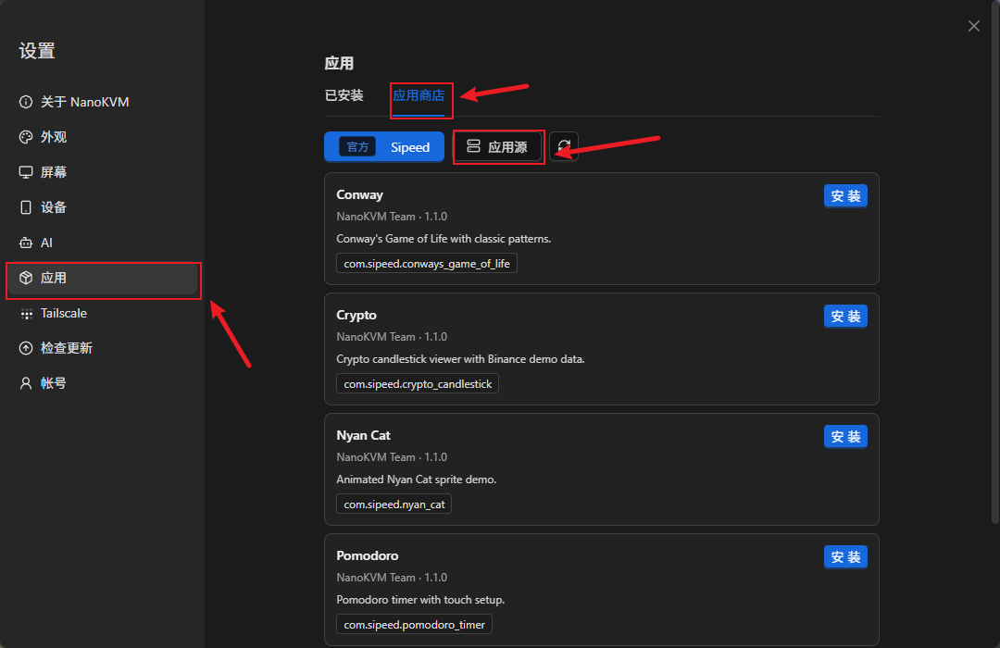
点击添加服务器，填写服务器名称和 URL 后保存。添加完成后，可以在应用商店中切换至该仓库。
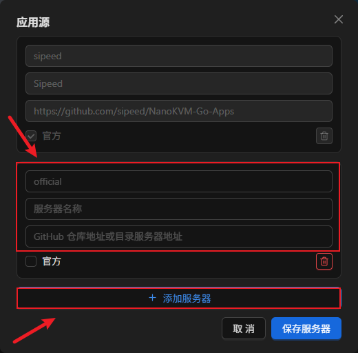
只添加可信的应用仓库。APP 的安装脚本会以 root 权限运行；如果页面提示 APP 包含安装脚本，请先检查其源码、配置项和实际功能。
安装 APP
选择好 App Server 后，按照以下步骤安装 APP：
- 在设置页面中进入
应用 > 应用商店。
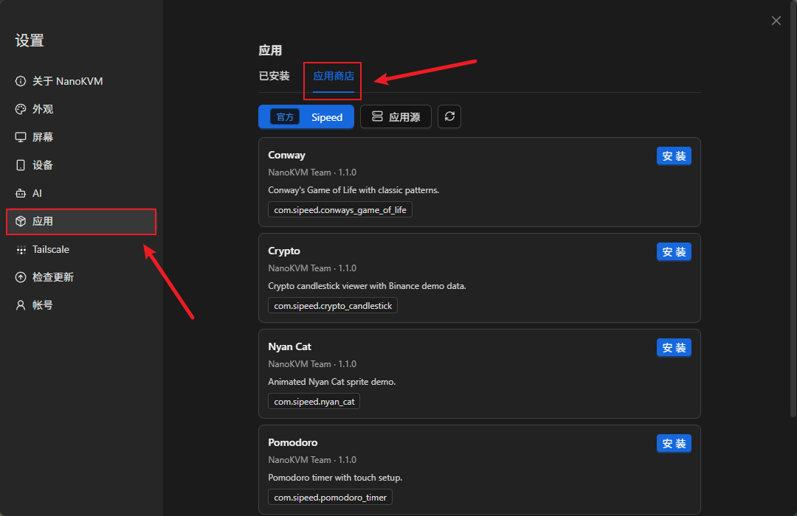
- 选择 App Server 和需要安装的 APP，然后点击
安装。
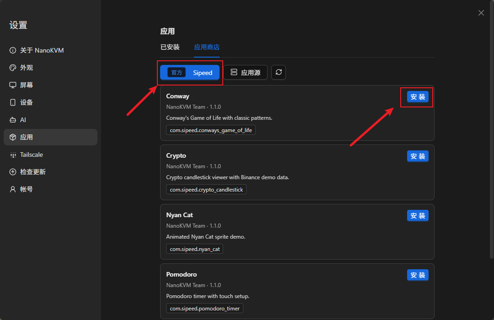
如果 APP 需要配置环境变量，按照页面提示填写，然后确认安装。
在
安装日志（Installation log）窗口中等待安装完成。显示安装成功后再关闭窗口。
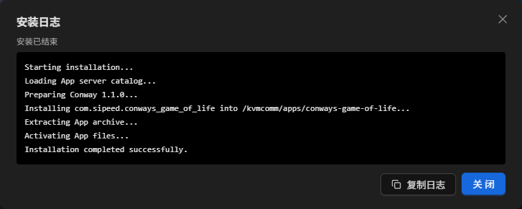
安装日志会显示仓库读取、校验、解压、安装脚本和最终结果。如果安装失败，请先复制或截图保存日志末尾的错误信息。
- 回到设备触摸屏的
Setting页面，点击应用图标进入Apps页面。
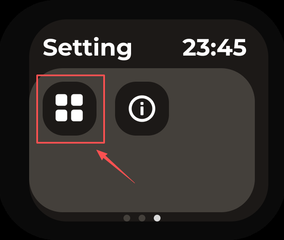
- 然后选择刚安装的 APP 启动。
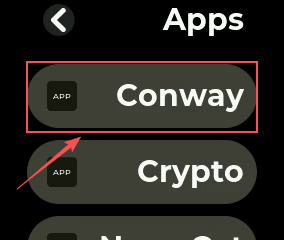
上传 ZIP 安装 APP
从其他渠道取得 APP，或需要安装自己开发的 APP 时，可以上传 ZIP 文件。ZIP 内必须只有一个顶层 APP 目录，例如：
example-app.zip
└── example-app/
├── app.json
├── main.py
└── assets/ # 可选资源
安装步骤如下：
打开 NanoKVM Go 网页，进入
设置 > 应用 > 已安装；点击
上传 ZIP，选择 APP 的 ZIP 文件；
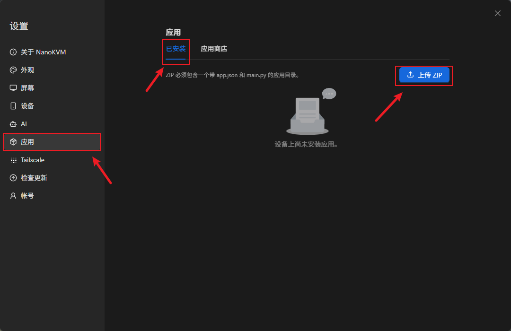
- 网页完成 ZIP 和
app.json校验后，按提示填写 APP 配置；
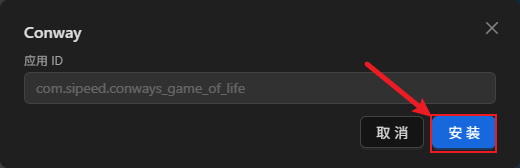
- 点击
安装，在安装日志窗口中等待安装成功；
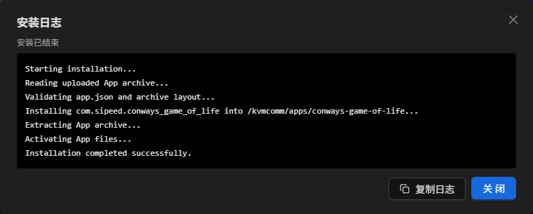
- 回到设备触摸屏的
Apps页面，选择对应 APP 启动。
退出 APP
APP 全屏运行时，可以使用设备保留的左边缘手势返回 Apps 页面：
- 在屏幕左边缘按住手指，向右滑到屏幕中部；
- 保持手指不动，等待左边缘的上下两段进度条逐渐靠近并填满；
- 进度条填满后松开手指，退出 APP。
如果想取消退出，请在松手前将手指向左移回去，等进度条重新分开后再松手，APP 会继续运行：
管理已安装的 APP
在网页 设置 > 应用 > 已安装 中，可以编辑 APP 的环境变量、下载 ZIP 或移除 APP。安装、删除、重命名 APP，或修改 app.json 后，设备端列表通常会在约 10 秒内自动刷新，不需要重启 kvmcomm。
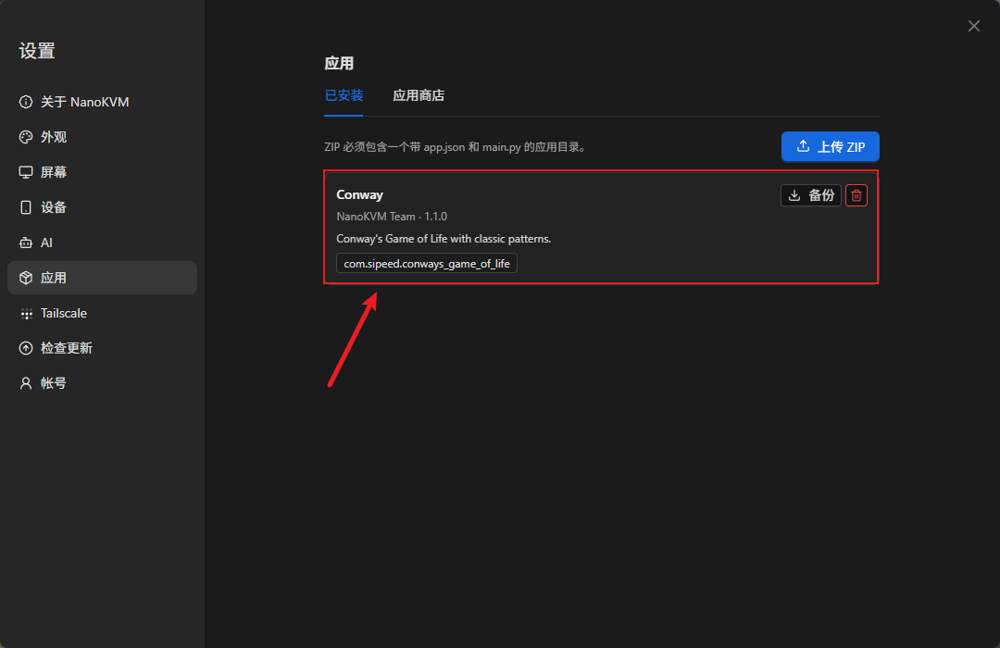
开发自定义 APP
获取 SDK 和示例
公开内容位于 NanoKVM-Go-Apps，仓库按用途分为两个独立分支：
开发 APP 时从 base 获取 SDK 和接口文档；浏览、安装或参考现有 APP 时使用 main。两个分支都保留 _utils，录屏等通用工具可从任一分支获取。
录制 NanoKVM Go 的设备屏幕画面
如果需要把 APP 的实际操作过程录成视频，可以使用开源仓库 _utils/record-nanokvm-fb0.sh。它从设备的 fb0 读取屏幕画面，在本机编码为视频，适合录制 APP 演示或问题复现过程。
脚本只通过 ssh 从 NanoKVM Go 读取 framebuffer，不使用 scp。本机需要准备 Bash、ssh 和 ffmpeg；使用前还要确认本机可以免密登录设备：
ssh root@<设备IP> 'echo ok'
如果还没有本机 SSH 密钥，先在本机终端生成一个：
ssh-keygen -t ed25519
然后把公钥复制到 NanoKVM Go，并再次验证登录：
ssh-copy-id root@<设备IP>
ssh root@<设备IP> 'echo ok'
最后一条命令输出 ok，并且不再要求输入密码时，说明免密登录已经可用。
在本机终端获取脚本并进入
_utils目录：git clone https://github.com/sipeed/NanoKVM-Go-Apps.git cd NanoKVM-Go-Apps/_utils确认本机可以找到脚本所需的命令：
command -v ssh command -v ffmpeg如果任一命令没有输出路径，请先在本机安装对应工具。
通过
NANOKVM_HOST指定 NanoKVM Go 的实际地址，然后执行脚本：chmod +x record-nanokvm-fb0.sh NANOKVM_HOST=root@<设备IP> ./record-nanokvm-fb0.sh xxx.mp4脚本开始后，在设备触摸屏上操作 APP。录制结束时在本机终端按
Ctrl-C，脚本会结束采集并保存视频文件；终端会显示保存位置。NANOKVM_HOST只对本次命令生效，不需要修改脚本源码。Windows 10/11 用户请通过 Git Bash 或 WSL 执行 Bash 脚本，并在同一环境中安装ssh和ffmpeg。
创建第一个 Hello World
APP 目录结构
每个 APP 使用独立目录。目录名建议使用小写英文和连字符，例如 hello-world：
hello-world/
├── app.json
├── main.py
├── assets/ # 可选资源，例如 icon.png
├── pre-install.sh # 可选；仅在 app.json 声明 pre_script 时需要
└── post-install.sh # 可选；仅在 app.json 声明 post_script 时需要
启动器扫描 launcher.apps_dir 的直接子目录（默认 /kvmcomm/apps）。一个目录要出现在 Apps 页面，必须同时满足：
- 目录名不以
_开头； - 有普通文件
main.py； - 有合法的
app.json； app.json.app_id是合法的倒置域名包名，并与目录名对应；app.json.name是非空字符串。
Apps 列表会自动刷新，新增、删除、重命名 APP 或修改 app.json 通常等待约 10 秒即可，不需要重启 kvmcomm。
编写清单和入口文件
在 hello-world/app.json 中写入最小 APP 清单：
{
"app_id": "com.example.hello_world",
"name": "Hello World",
"creator": "Your Name",
"create_time": "2026-07-30",
"version": "1.0.0",
"desc": "A minimal NanoKVM App.",
"category": "demo"
}
app_id、name、creator、create_time 和 version 是必填字段；desc、category 和 icon 可选。app_id 至少包含三段，最后一段必须等于目录名将 - 替换为 _ 后的结果，例如 hello-world 对应 com.example.hello_world。为了先跑通最小示例，这里暂不配置图标；以后添加图标时，icon 应填写相对于 APP 目录的资源路径。
如果 APP 需要配置环境变量，把它们写在 app.json.env 对象中。网页会根据它自动生成配置表单，APP 通过 ctx.env 读取。不要再单独创建 .env 文件。
如果 APP 在首次安装时需要安装依赖或生成配置，可以在同一个 app.json 中声明可选的安装生命周期脚本。下面继续以 hello-world 为例，展示包含环境变量和生命周期脚本的完整清单：
{
"app_id": "com.example.hello_world",
"name": "Hello World",
"creator": "Your Name",
"create_time": "2026-07-30",
"version": "1.0.0",
"desc": "A configurable NanoKVM App.",
"category": "demo",
"env": {
"GREETING": {
"label": "问候语",
"default": "Hello",
"required": true,
"secret": false,
"description": "显示在屏幕上的文字"
}
},
"pre_script": "pre-install.sh",
"post_script": "post-install.sh"
}
注意：
env、pre_script和post_script不是单独的 JSON 文件，也不能写在app.json最外层大括号后面。它们必须和app_id、name等字段一起放在同一个{ ... }中，并用逗号分隔。如果你的 APP 不需要这些功能，就不要把这些字段写进清单。
清单声明 pre_script 或 post_script 后，APP 目录中必须存在对应脚本，打包 ZIP 时也必须包含这些文件；否则安装会失败。如果不需要安装脚本，请从清单中删除对应字段。
pre_script在 APP 正式部署前运行，失败时不会安装 APP；post_script在 APP 文件部署后运行，失败时会回滚本次安装；- 路径必须是 APP 目录内的安全相对路径，脚本工作目录也是 APP 目录；
- 脚本可以读取
app.json.env中的配置，以及NANOKVM_APP_DIR、NANOKVM_APP_ID和NANOKVM_APP_PHASE； - 脚本通过
/bin/bash以 root 权限执行，因此只能安装来源可信的 APP。
依赖安装、目录初始化等一次性工作应放在生命周期脚本中，不要再要求普通用户登录 SSH 后手动执行 apt install 或 pip install。脚本应支持重复执行，并使用非交互模式，避免安装页面一直等待输入。
在 hello-world/main.py 中写入最小程序：
#!/usr/bin/env python3
from appbase import AppContext, WHITE, app
@app()
def main(ctx: AppContext) -> None:
greeting = ctx.env.get("GREETING", "Hello")
def tick(dt: float) -> None:
ctx.fb.clear(0)
ctx.fb.text_center(
ctx.width // 2,
ctx.height // 2,
greeting,
WHITE,
2,
)
ctx.run(tick, fps=10)
if __name__ == "__main__":
main()
@app() 会读取同目录的 app.json，打开 framebuffer 和触摸设备，创建 AppContext，并在 APP 退出时清理资源。保留 if __name__ == "__main__"，这样其他工具导入模块时不会意外打开硬件设备。
打包、上传和启动
先从 NanoKVM-Go-Apps 获取示例，或在本机创建 hello-world 目录。网页上传要求 ZIP 内只有一个顶层 APP 目录：
hello-world.zip
└── hello-world/
├── app.json
├── main.py
├── assets/ # 可选
├── pre-install.sh # 仅在 app.json 声明时需要
└── post-install.sh # 仅在 app.json 声明时需要
在本机终端打包：
zip -r hello-world.zip hello-world
然后按照上传 ZIP 安装 APP中的流程安装 hello-world.zip。安装时请注意：
- 如果声明了
app.json.env，网页会在安装前显示环境变量表单； Installation log会实时显示上传、校验、解压和生命周期脚本的输出，请等日志显示安装成功后再关闭窗口；- 安装失败时，请保存完整日志，并根据末尾的错误信息修正 APP 或配置；
- 安装成功后，回到设备触摸屏的
Apps页面并选择Hello World。
安装日志只记录本次操作，遇到问题时建议复制或截图保存末尾几行。
进阶：通过 SSH/SCP 命令行部署
如需调试或自动化，也可以在本机终端通过 SSH/SCP 直接复制目录；设备端目标仍是 launcher.apps_dir（默认 /kvmcomm/apps）：
scp -r hello-world root@<设备IP>:/kvmcomm/apps/
ssh root@<设备IP> 'python3 -m py_compile /kvmcomm/apps/hello-world/main.py'
直接复制后同样等待 Apps 列表自动刷新。不要覆盖设备已有的共享 appbase.py 和 appbase.pyi，除非你确认 SDK 与 APP 版本匹配。
认识常用 API
AppContext、生命周期和主循环
在前面的 Hello World 示例中，main() 函数接收了一个名为 ctx 的参数：
@app()
def main(ctx: AppContext) -> None:
...
ctx 是英文 context（上下文）的常用缩写，它的类型是 AppContext。这里的“上下文”可以理解为 APP 运行期间所需资源的集合，其中包含 framebuffer 绘图对象、触摸输入、屏幕尺寸和网页配置的环境变量。
ctx 不需要开发者手动创建，也不是全局变量。@app() 装饰器会把原始的 main(ctx) 包装成一个无参数入口。程序加载和运行时的完整顺序如下：
加载 main.py 并定义 main(ctx)
→ @app() 读取、校验 app.json 和环境变量配置，并生成无参数入口
→ 文件末尾调用装饰后的 main()
→ 打开 framebuffer 和触摸设备
→ 创建 AppContext 对象
→ 将该对象作为 ctx 传给原始 main(ctx)
→ APP 结束后关闭触摸设备和 framebuffer
参数名并非必须写成 ctx，改成 context 也可以；本文和官方示例统一使用更常见的 ctx。
AppContext 的常用成员如下：
| API | 作用 |
|---|---|
ctx.width、ctx.height |
旋转后的完整逻辑 framebuffer 尺寸 |
ctx.fb |
绘图对象 |
ctx.touch |
底层触摸读取对象，通常通过下方辅助方法使用 |
ctx.env |
从 app.json 的 env 字段和 Launcher 配置生成的只读环境变量映射 |
ctx.poll() |
返回尚未处理的 (kind, x, y) 触摸事件列表 |
ctx.taps() |
只返回点击坐标，忽略滑动事件 |
ctx.button(rect, label, bg, fg, scale) |
绘制按钮并返回用于触摸命中检测的同一个 Rect |
ctx.flush() |
把后备缓冲提交到屏幕 |
ctx.run(tick, fps, on_tap, on_swipe) |
限帧、分发触摸并自动刷新 |
大多数 APP 可以直接调用 ctx.run() 运行主循环。它会在每一帧依次完成：
- 读取触摸事件，并将点击和滑动分别交给
on_tap、on_swipe； - 调用一次
tick(dt)更新状态并绘制当前画面； - 自动调用
ctx.flush()，把后备缓冲显示到屏幕； - 根据
fps等待下一帧，避免循环占满 CPU。
tick(dt) 中的 dt 表示距上一帧经过的秒数，适合用来计算动画或倒计时。让 tick() 返回 False 可以结束主循环；main(ctx) 随后返回，@app() 会清理硬件资源。
因此，使用 ctx.run() 时不需要在 tick() 中再次调用 flush()，也不要独立打开或关闭同一个 framebuffer 和触摸设备。如果 APP 不需要持续刷新，也可以直接使用 ctx.poll() 和 ctx.flush() 自行组织流程。
绘图、颜色和按钮
ctx.fb 提供 clear()、put_pixel()、fill_rect()、draw_line()、draw_text()、text_center()、draw_sprite() 和 flush()。颜色可以使用 rgb565(r, g, b) 或 SDK 内置常量：
BLACK WHITE RED GREEN BLUE YELLOW GRAY DKGRAY
ORANGE CYAN MAGENTA NAVY
按钮可以用同一个 Rect 绘制和命中检测：
from appbase import AppContext, GREEN, RED, Rect, app
@app()
def main(ctx: AppContext) -> None:
state = {"count": 0}
add_button = Rect(70, 80, 100, 48)
def on_tap(x: int, y: int) -> None:
if add_button.contains(x, y):
state["count"] += 1
def tick(dt: float) -> None:
ctx.fb.clear(0)
ctx.button(add_button, "ADD", GREEN)
ctx.fb.text_center(ctx.width // 2, 145, str(state["count"]), RED, 2)
ctx.run(tick, fps=20, on_tap=on_tap)
if __name__ == "__main__":
main()
资源和相对路径
启动器会把当前工作目录切换到 APP 目录，因此 assets/icon.png 这样的相对路径可以直接使用。需要兼容从其他目录导入或测试时，建议根据 __file__ 计算路径：
from pathlib import Path
APP_DIR = Path(__file__).resolve().parent
icon_path = APP_DIR / "assets" / "icon.png"
开发时注意这些
屏幕尺寸和不可见区域
物理 framebuffer 为 284×240，左侧 14 列不会显示。主机通常以 rotate=90 启动 APP，逻辑画布是 240×284，底部 14 行不可见；屏幕反转时使用 rotate=270，隐藏区域移动到顶部。
rotate |
逻辑尺寸 | 不可见区域 | 可见逻辑区域 |
|---|---|---|---|
0 |
284×240 |
左 14 列 | x=14..283, y=0..239 |
90 |
240×284 |
底部 14 行 | x=0..239, y=0..269 |
180 |
284×240 |
右 14 列 | x=0..269, y=0..239 |
270 |
240×284 |
顶部 14 行 | x=0..239, y=14..283 |
布局始终依据 ctx.width、ctx.height 和 ctx.fb.rotate，不要硬编码固定画布。需要计算可见区域时，可按上述表格处理。
触摸交互
ctx.poll() 返回的事件包括 tap、up、down、left、right，坐标已经转换到旋转后的逻辑坐标系。
主机保留了左边缘退出手势。APP 自己定义横向滑动操作时，建议不要把控件放在左边缘区域，以免用户退出 APP 时同时触发其他操作。触摸设备不可用时，主机会拒绝启动 APP。
运行环境和安全
运行前提包括可用的 /dev/fb0、触摸设备 /dev/input/event0、Python 3，以及设备配置中已启用的 launcher。非默认设备路径可通过环境变量配置：
| 变量 | 默认值 | 作用 |
|---|---|---|
APPBASE_FB_DEVICE |
/dev/fb0 |
framebuffer 设备 |
APPBASE_FB_ROTATE |
0 |
旋转角度；主机通常设置为 90 或 270 |
APPBASE_TOUCH_DEVICE |
/dev/input/event0 |
触摸设备 |
APP 可能以高权限运行，可以访问设备配置、凭据和网络。只部署可信代码，不要在源码中保存密钥，也不要随意安装来源不明的依赖。设备上的 appbase.py 和 appbase.pyi 必须保持版本匹配。
模拟器和 AI 开发
x86 SDL 模拟器只读取目录并展示 Apps 列表，不会真正执行 Python、映射 framebuffer、读取触摸或模拟退出手势。画面、颜色、方向和帧率必须在 NanoKVM Go 实机验证。
让 AI 编写 APP 前，先把设备上的 README、现有 APP 源码和需求一起提供给它：
进阶：从设备读取运行说明
ssh root@<设备IP> 'cat /kvmcomm/apps/README.md'
明确要求 AI 遵循目录式架构：生成 app.json 和 main.py，不要把 APP 写成散落在目录中的单个 Python 文件，也不要覆盖共享 SDK。
完成发布
一个 APP 通过下面的检查，就可以交给其他人使用：
app.json字段完整，目录名和资源路径正确；main.py能通过py_compile；- Apps 页面可以显示并启动；
- 画面没有落入 14 像素不可见区；
- 点击、滑动和左边缘退出手势正常；
- APP 退出后主界面和触摸控制恢复；
- 没有把密钥、真实 IP 或设备隐私数据写进代码和资源。